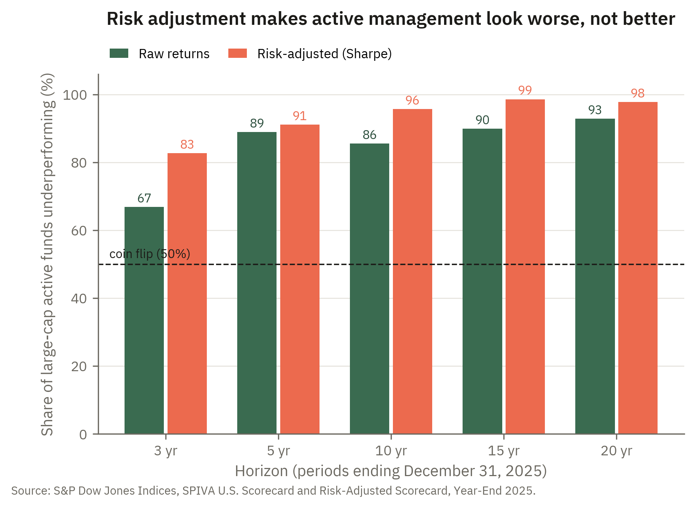

6 Portfolio performance evaluation
6.1 Introduction
Having just derived the Capital Asset Pricing Model, we turn to a question the model itself appears to rule out: how do we tell a skilled portfolio manager from a lucky one? The tension is worth stating at the outset. The CAPM says that expected return is completely determined by systematic risk, so that every asset and every portfolio plots exactly on the Security Market Line and no manager can earn more than her beta entitles her to. In that world the abnormal return we will call alpha is identically zero, and there is simply nothing for performance evaluation to measure. The enterprise of this chapter therefore presupposes that the CAPM does not hold exactly. Alpha is what appears when one of the model’s assumptions fails — above all the assumption that markets are informationally efficient, so that prices already embed every scrap of available information and no one can systematically profit from gathering or interpreting it better than the crowd. A manager who does process information better than the market can earn a return the model cannot explain, and it is precisely that residual return, invisible in a frictionless efficient market, that the measures below are built to detect. Each performance characteristic we develop — from Jensen’s alpha to the information ratio — earns its keep only in a world where markets are informationally inefficient enough for genuine skill to leave a footprint; informational efficiency itself is the subject we take up in the chapters that follow.
Three questions organize the evaluation of portfolio performance. First, when a portfolio earns a high return, how much of that return is compensation for bearing risk rather than evidence of skill, and how can we strip the one from the other? Second, which notion of risk is the right one to adjust for, given that a portfolio held in isolation exposes an investor to its total volatility, while the very same portfolio held as one sleeve of a diversified whole contributes only its systematic risk? Third, when a manager is hired to beat a specific benchmark, how do we measure the return she adds relative to the risk she takes away from that benchmark? These questions matter because the raw return on a portfolio — the number that catches an investor’s eye first — is almost useless on its own: it confounds skill with luck, and reward with risk.
The first question is the problem of risk adjustment, and the answer depends on the role the portfolio plays. If the portfolio is the entirety of an investor’s risky wealth, then the relevant risk is the portfolio’s total standard deviation, because that is the volatility the investor actually experiences. The Sharpe ratio measures reward per unit of total risk and is the natural yardstick in this case. If instead the portfolio is one component of a larger, well-diversified holding, then its idiosyncratic risk has already been diversified away, and only its systematic risk — its beta — contributes to the risk the investor bears. The Treynor measure and Jensen’s alpha adjust for systematic risk and are the appropriate yardsticks in this case. Both build directly on the Capital Asset Pricing Model of the previous chapter: the CAPM supplies the “fair” expected return that a portfolio of given beta ought to earn, and abnormal performance is measured as the gap between the return realized and the return the CAPM predicts.
The third question arises because most professional portfolios are not managed in a vacuum but against a stated benchmark — an index the manager is paid to outperform. Here the natural object of study is the active return, the difference between the portfolio’s return and the benchmark’s, and the natural measure of risk is the volatility of that difference, called tracking error. The information ratio, the active return per unit of tracking error, is the reward-to-risk ratio of active management itself, and it is the measure most directly tied to the statistical question of whether a manager has genuine skill or has merely been lucky.
The chapter takes the five measures in turn — the Sharpe ratio, the Treynor measure, Jensen’s alpha, tracking error, and the information ratio — developing the intuition and the algebra behind each, and is careful throughout to say which measure is appropriate in which situation. It then works a single numerical example through all five, and closes by drawing out the relationships among them: in particular, that the Sharpe and Treynor measures rank fully diversified portfolios identically but diverge precisely to the extent that a portfolio carries diversifiable risk, and that the information ratio is, up to a factor of \(\sqrt{T}\), the \(t\)-statistic on a manager’s alpha.
The whole point of these measures is to separate reward from risk — and once you do, the case for active management gets harder to make. S&P Dow Jones Indices’ SPIVA scorecard found that even on a risk-adjusted basis, roughly 97% of U.S. domestic active funds underperformed the broad market over the 20 years through 2024 — an even worse showing than on raw returns. Measuring performance correctly, rather than being dazzled by a single year’s headline number, is exactly what this chapter is about. Read it at S&P Dow Jones Indices.
Market Insight
A natural hope for active management is that raw return comparisons are unfair — perhaps active funds earn their keep by delivering smoother rides, so that adjusting for risk would flatter them. The data say the opposite. Figure 6.1 compares, for large-cap funds and the horizons S&P reports, the share of funds underperforming on raw returns with the share underperforming after the returns of every fund and the benchmark are put on an equal-risk footing using Sharpe ratios — the first measure this chapter develops. At every horizon the risk-adjusted bar is higher: over fifteen years, 90% of large-cap funds trail the S&P 500 on raw returns but 99% trail it after risk adjustment. The economic reading is that active funds have tended to take more total risk than their benchmarks, not less, so adjusting for risk removes what looked like a partial offset to their fee drag. Keep this figure in mind as the chapter proceeds: it is a preview of why every serious performance evaluation begins by asking not “what did it return?” but “what did it return per unit of risk?”

6.2 Why returns alone mislead
Let \(r_P\) denote the (random) return on a portfolio \(P\) over an evaluation period, \(r_f\) the risk-free rate, \(r_M\) the return on the market portfolio, and \(r_b\) the return on a benchmark against which \(P\) is judged. The excess return of the portfolio is \(r_P - r_f\), and its expected value \(Er_P - r_f\) is the risk premium the portfolio is expected to deliver. We will measure total risk by the standard deviation \(\sigma_P = \sqrt{Var(r_P)}\) and systematic risk by the beta
\[\beta_P = \frac{Cov(r_P, r_M)}{\sigma^2_M},\]
exactly as in the preceding chapter. In practice none of these population quantities is observed; they are estimated from a sample of historical returns, so each measure below has an ex ante form written in terms of expectations and an ex post form computed from sample averages and sample standard deviations. We write sample averages with a bar, as in \(\bar r_P\).
The reason raw return is an inadequate measure of performance is that it answers the wrong question. An investor does not want the portfolio that earned the most last year; she wants the portfolio that delivers the most expected return for the risk she is willing to bear. Two portfolios that earned the same average return are not equally good if one did so with twice the volatility, and a portfolio that earned a spectacular return by taking a spectacular amount of risk may have been a poor choice that happened to pay off. Every measure in this chapter is therefore a ratio or a difference that places return in the numerator and some notion of risk in the denominator or the baseline. What distinguishes the measures from one another is which notion of risk they use, and that choice is dictated by how the portfolio is held.
6.3 The Sharpe ratio
- Sharpe ratio.
-
The ratio of a portfolio’s expected excess return to the standard deviation of its return, \[S_P = \frac{Er_P - r_f}{\sigma_P}.\]
The Sharpe ratio, introduced by William Sharpe in 1966 as the “reward-to-variability” ratio, measures the expected excess return earned per unit of total risk. Its ex post counterpart replaces the population moments with their sample estimates,
\[\hat S_P = \frac{\bar r_P - \bar r_f}{s_P},\]
where \(\bar r_P - \bar r_f\) is the average realized excess return and \(s_P\) is the sample standard deviation of the portfolio’s return.
The intuition is geometric. Recall that combining a risky portfolio \(P\) with the risk-free asset traces out the capital allocation line through \(P\): an investor who places a fraction \(y\) of wealth in \(P\) and \(1-y\) in the risk-free asset earns expected return \(r_f + y(Er_P - r_f)\) with standard deviation \(y\sigma_P\). Eliminating \(y\) shows that the attainable combinations lie on a straight line in \((\sigma, Er)\) space that begins at \(r_f\) and passes through \(P\), and the slope of that line is precisely
\[\text{slope of the CAL} = \frac{Er_P - r_f}{\sigma_P} = S_P.\]
A higher Sharpe ratio is a steeper capital allocation line, which means more expected return at every level of total risk the investor might choose. This is why, among all portfolios that an investor might hold as her entire risky position, the one with the highest Sharpe ratio is unambiguously best: it offers the most favorable trade-off, and any desired risk level is then reached by mixing it with the risk-free asset. It is also why the tangency portfolio of the previous chapters is exactly the maximum-Sharpe-ratio portfolio.
Because it uses total risk in the denominator, the Sharpe ratio is the right measure when the portfolio under evaluation represents all of the investor’s risky wealth. It charges the portfolio for every source of volatility it carries, diversifiable or not — which is appropriate, because an investor holding nothing else is exposed to all of that volatility.
6.4 The Treynor measure
- Treynor measure.
-
The ratio of a portfolio’s expected excess return to its beta, \[T_P = \frac{Er_P - r_f}{\beta_P}.\]
The Treynor measure, sometimes called the reward-to-volatility ratio, replaces total risk with systematic risk in the denominator. It answers the question: how much excess return did the portfolio earn for each unit of market risk it took on?
The reason one might prefer beta to standard deviation in the denominator is the central lesson of the CAPM. If the portfolio being evaluated is not held in isolation but as one component of a large, well-diversified portfolio, then its idiosyncratic risk is diversified away by the other holdings and does not contribute to the risk the investor ultimately bears. Only the portfolio’s covariance with the rest of the world — summarized by its beta — survives diversification. For such a component portfolio, reward should be measured per unit of the risk it actually adds, namely its beta, and that is what the Treynor measure does.
Like the Sharpe ratio, the Treynor measure has a geometric reading: it is the slope of the line in \((\beta, Er)\) space that runs from the risk-free asset, plotted at \(\beta = 0\), through the portfolio. The market portfolio has \(\beta_M = 1\), so its Treynor measure is
\[T_M = \frac{Er_M - r_f}{1} = Er_M - r_f,\]
which is just the slope of the Security Market Line. A portfolio beats the market on a Treynor basis precisely when \(T_P > T_M\), which is the same as saying that the portfolio plots above the Security Market Line. Note that the Treynor measure is denominated in excess return per unit of beta, while the Sharpe ratio is denominated in excess return per unit of standard deviation; the two numbers are not directly comparable, and as we will see they can rank portfolios differently when those portfolios are not fully diversified.
6.5 Jensen’s alpha
- Jensen’s alpha.
-
The difference between a portfolio’s expected return and the return predicted for it by the CAPM, \[\alpha_P = Er_P - \big[\,r_f + \beta_P(Er_M - r_f)\,\big].\]
Where the Treynor measure rescales excess return by beta, Jensen’s alpha subtracts the CAPM benchmark return outright. The bracketed term is exactly the expected return the Security Market Line assigns to an asset of beta \(\beta_P\); alpha is the vertical distance by which the portfolio sits above (if positive) or below (if negative) that line. Under the CAPM, every asset and every portfolio has \(\alpha = 0\), because the CAPM says that expected return is completely determined by beta. A nonzero alpha is therefore return that the single-factor model cannot account for, and as the introduction stressed, it can arise only when one of the model’s assumptions fails. The economically interesting failure is a breakdown of informational efficiency: if prices do not already embed all available information, a manager who collects or interprets that information better than the market can earn a return beta cannot explain, and alpha is the visible trace of that advantage. A positive alpha is thus putative evidence of skill — though it may equally reflect exposure to a priced risk that the one-factor model omits rather than any informational edge.
In practice alpha is estimated as the intercept of the time-series regression of the portfolio’s excess return on the market’s excess return,
\[r_{P,t} - r_{f,t} = \alpha_P + \beta_P\,(r_{M,t} - r_{f,t}) + \varepsilon_{P,t},\]
where the slope \(\beta_P\) is the estimated systematic-risk exposure and the residual \(\varepsilon_{P,t}\) captures the portion of the portfolio’s return that is uncorrelated with the market. The fitted intercept \(\hat\alpha_P\) is the average return the manager delivered over and above what her market exposure alone would have produced.
Two cautions accompany alpha. First, it is an absolute measure, expressed in units of return, and so it does not by itself reveal how much risk was taken to earn it: a manager who produces 2% of alpha while subjecting investors to wild idiosyncratic swings is not obviously better than one who produces 1% of alpha with a steady hand. Second, an estimated alpha is a noisy statistic, and a positive point estimate is not proof of skill. Whether a measured alpha is distinguishable from luck is a question about its \(t\)-statistic, and that question is answered most cleanly by the information ratio developed below.
6.6 Tracking error
- Tracking error.
-
The standard deviation of the difference between a portfolio’s return and its benchmark’s return, \[TE_P = \sigma\!\left(r_P - r_b\right) = \sqrt{Var(r_P - r_b)}.\]
The quantity \(r_P - r_b\) is the portfolio’s active return: the amount by which it beats or trails its benchmark over the period. Tracking error is the volatility of that active return, and it measures how tightly the portfolio hugs the benchmark it is managed against. A portfolio that is constructed to replicate an index — a pure index fund — has a tracking error close to zero, because its return moves nearly in lockstep with the benchmark. A high-conviction active fund that takes large positions away from the index has a large tracking error.
Expanding the variance of the difference shows what drives tracking error,
\[TE_P^2 = \sigma_P^2 + \sigma_b^2 - 2\,\rho_{Pb}\,\sigma_P\,\sigma_b,\]
where \(\rho_{Pb}\) is the correlation between the portfolio and its benchmark. Tracking error is small when the portfolio and benchmark have similar volatilities and are highly correlated, and it grows as the portfolio’s holdings depart from the benchmark’s. It is important to recognize that tracking error is a measure of risk, not of performance: it tells you how far a portfolio is willing to stray from its benchmark, not whether straying paid off. A manager can run a large tracking error and still underperform. What tracking error provides is the denominator for the one measure that does combine active return with active risk.
6.7 The information ratio
- Information ratio.
-
The ratio of a portfolio’s expected active return to its tracking error, \[IR_P = \frac{Er_P - Er_b}{\sigma(r_P - r_b)} = \frac{\overline{r_P - r_b}}{TE_P}.\]
The information ratio is to active management what the Sharpe ratio is to total investing. The Sharpe ratio measures excess return over the risk-free rate per unit of total risk; the information ratio measures excess return over the benchmark per unit of active risk. It answers the question that matters when judging a manager paid to beat an index: for each unit of benchmark-relative risk she chose to take, how much did she add?
There is a closely related definition that uses the regression of the previous section rather than a benchmark difference. Writing the active return as the manager’s alpha plus residual noise, the information ratio can be expressed as alpha divided by the standard deviation of the residual,
\[IR_P = \frac{\alpha_P}{\sigma(\varepsilon_P)},\]
where \(\sigma(\varepsilon_P)\) is the residual (non-systematic) risk left over after accounting for market exposure. In this form the information ratio is the reward for skill per unit of the diversifiable risk the manager imposes. The two definitions coincide when the benchmark is the market portfolio and the manager’s only systematic exposure is to the market; in general they differ slightly, and it is worth stating which one is in use.
The information ratio is the measure most tightly linked to the statistical question of skill versus luck. To see why, recall that \(\hat\alpha_P\) is the intercept of the regression above, estimated from \(T\) observations of the residual \(\varepsilon_{P,t}\). The standard error of that intercept is approximately the residual volatility divided by the square root of the sample size,
\[se(\hat\alpha_P) \approx \frac{\sigma(\varepsilon_P)}{\sqrt{T}}.\]
The \(t\)-statistic for testing whether alpha is zero is the estimate divided by its standard error, and substituting \(IR_P = \alpha_P/\sigma(\varepsilon_P)\) gives
\[t(\hat\alpha_P) = \frac{\hat\alpha_P}{se(\hat\alpha_P)} \approx \frac{\hat\alpha_P}{\sigma(\varepsilon_P)/\sqrt{T}} = \frac{\hat\alpha_P}{\sigma(\varepsilon_P)}\sqrt{T} = IR_P \cdot \sqrt{T}.\]
So, over an evaluation period of \(T\) years, the \(t\)-statistic on a manager’s estimated alpha is approximately
\[t(\hat\alpha_P) \approx IR_P \cdot \sqrt{T}.\]
An information ratio of \(0.5\) sustained over sixteen years yields a \(t\)-statistic of about \(2\), the conventional threshold for statistical significance — which is a sobering way of seeing how much data it takes to establish skill with any confidence. The information ratio also sits at the center of Grinold’s fundamental law of active management, \(IR \approx IC \times \sqrt{\text{breadth}}\), which decomposes a manager’s skill into the quality of her individual forecasts (the information coefficient \(IC\)) and the number of independent bets she makes (the breadth). Both relationships make the same point: a respectable information ratio, consistently achieved, is a far more demanding standard than a single year’s outperformance.
6.8 Which measure when?
The five measures are not competitors to be ranked from best to worst; each is the correct measure in a particular situation, and using the wrong one gives a misleading answer.
- The Sharpe ratio is appropriate when the portfolio under evaluation is the investor’s entire risky position, because then the investor is exposed to the portfolio’s total risk.
- The Treynor measure and Jensen’s alpha are appropriate when the portfolio is one component of a larger, well-diversified portfolio, because then only its systematic risk matters. Treynor gives a reward-to-risk ratio suited to ranking such components; Jensen’s alpha gives the absolute abnormal return.
- Tracking error measures how much active risk a benchmarked portfolio takes, and the information ratio measures the active return earned per unit of that active risk — the right standard for a manager judged against a benchmark.
A useful relationship ties the first two together. If a portfolio carries no residual risk — that is, if it is perfectly diversified so that \(\varepsilon_P \equiv 0\) — then its total and systematic risk are linked by \(\sigma_P = \beta_P\,\sigma_M\), and the Sharpe and Treynor measures become
\[S_P = \frac{Er_P - r_f}{\sigma_P} = \frac{Er_P - r_f}{\beta_P \sigma_M} = \frac{T_P}{\sigma_M}.\]
Since \(\sigma_M\) is the same for every portfolio, the Sharpe and Treynor measures rank fully diversified portfolios identically. They diverge only to the extent that a portfolio carries diversifiable risk, and the size of the gap between a portfolio’s Sharpe ranking and its Treynor ranking is itself a signal of how much idiosyncratic risk the manager has left on the table. This is the precise sense in which the choice of denominator encodes an assumption about how the portfolio is held.
6.9 A worked example
Suppose that over an evaluation period the risk-free rate was \(r_f = 3\%\) and the market portfolio earned \(Er_M = 9\%\) with a standard deviation of \(\sigma_M = 16\%\). An active equity fund \(P\) earned \(Er_P = 12\%\) with a standard deviation of \(\sigma_P = 20\%\) and a beta of \(\beta_P = 1.2\). The fund is managed against a benchmark index with expected return \(Er_b = 9.5\%\), and the standard deviation of the fund’s active return relative to that benchmark was \(TE_P = 5\%\). We compute all five measures.
The Sharpe ratio of the fund and of the market are
\[S_P = \frac{12 - 3}{20} = 0.45, \qquad S_M = \frac{9 - 3}{16} = 0.375,\]
so the fund delivered more expected return per unit of total risk than the market did. The Treynor measure of the fund and of the market are
\[T_P = \frac{12 - 3}{1.2} = 7.5\%, \qquad T_M = \frac{9 - 3}{1} = 6.0\%,\]
so the fund also beat the market per unit of systematic risk, which is the same as saying it plots above the Security Market Line. The size of that gap is Jensen’s alpha,
\[\alpha_P = 12 - \big[\,3 + 1.2\,(9 - 3)\,\big] = 12 - 10.2 = 1.8\%.\]
The fund earned \(1.8\%\) more than its market exposure alone would justify. Relative to its benchmark, the fund’s active return was \(Er_P - Er_b = 12 - 9.5 = 2.5\%\), carried at a tracking error of \(5\%\), giving an information ratio of
\[IR_P = \frac{2.5}{5.0} = 0.50.\]
Finally, the fund’s residual risk can be recovered from the identity \(\sigma_P^2 = \beta_P^2\,\sigma_M^2 + \sigma^2(\varepsilon_P)\):
\[\sigma^2(\varepsilon_P) = 20^2 - 1.2^2 \cdot 16^2 = 400 - 368.64 = 31.36, \qquad \sigma(\varepsilon_P) = 5.6\%,\]
so the residual-risk form of the information ratio is \(\alpha_P / \sigma(\varepsilon_P) = 1.8/5.6 \approx 0.32\), somewhat below the benchmark-relative value of \(0.50\) because the two definitions measure active risk differently. Collecting the results:
| Measure | Fund \(P\) | Market / benchmark |
|---|---|---|
| Sharpe ratio | 0.45 | 0.375 |
| Treynor measure | 7.5% | 6.0% |
| Jensen’s alpha | 1.8% | 0 |
| Tracking error | 5.0% | — |
| Information ratio | 0.50 | — |
By every measure the fund outperformed, which is reassuring but not guaranteed: had the fund earned its \(12\%\) with a beta of, say, \(1.6\) instead of \(1.2\), its Jensen’s alpha would have been negative even though its raw return was unchanged, because a beta of \(1.6\) would entitle it to a CAPM return above \(12\%\). It is exactly this kind of reversal — a high raw return masking poor risk-adjusted performance — that the measures of this chapter are built to expose.
6.10 Summary
The raw return on a portfolio confounds reward with risk and skill with luck, and the measures of this chapter are devices for separating them. The Sharpe ratio divides expected excess return by total risk and is the slope of the capital allocation line; it is the right measure when the portfolio is all an investor holds. The Treynor measure divides expected excess return by beta and is appropriate when the portfolio is a diversified component, in which case only systematic risk matters. Jensen’s alpha measures the same systematic-risk-adjusted performance as an absolute return — the distance above the Security Market Line — and is estimated as the intercept of a market-model regression. Tracking error measures the volatility of a portfolio’s active return relative to a benchmark, and the information ratio divides active return by tracking error to give the reward-to-risk ratio of active management, a quantity that is essentially the \(t\)-statistic of manager skill divided by \(\sqrt{T}\). Fully diversified portfolios are ranked identically by the Sharpe and Treynor measures; the two diverge precisely to the degree that a portfolio carries diversifiable risk. Underlying the whole apparatus is a single premise: because the CAPM assigns zero alpha to every portfolio, any abnormal performance these measures uncover is a symptom of the model’s assumptions failing — most importantly, of markets that are not perfectly informationally efficient. That premise is what makes the question of market efficiency, taken up in the chapters that follow, the natural sequel to performance evaluation.
6.11 Application: An investment consultant evaluating managers
A consultant advising a pension board must recommend whether to keep or replace an equity manager who beat her benchmark by three points last year. Raw outperformance is exactly the number the consultant must look past. She first asks how the excess return was earned: a Jensen’s alpha regression separates the part attributable to simply running a higher beta from the part the manager actually added, and the \(t\)-statistic on that alpha — roughly the information ratio times the square root of the years of data — tells her whether the result is distinguishable from luck. She computes the information ratio to see whether the active return justified the active risk the manager took relative to the mandate, and the Sharpe ratio to confirm that adding the manager improves, rather than merely inflates, the risk-adjusted return of the plan as a whole. Only a manager whose outperformance survives all of these adjustments — not the one with the gaudiest single-year number — is worth the fees. The measures of this chapter are the instruments that turn a board’s hunch about a manager into a defensible decision.
Planet Money (NPR) — “Episode 688: Brilliant vs. Boring”: a famous $1 million, ten-year bet on whether hedge funds can beat a simple index fund frames the chapter’s central question — how do you tell genuine skill from luck?
6.12 Homework problems
6.12.1 Conceptual
PERF-C1. An investor is deciding how to allocate all of her risky wealth between two mutual funds. Fund A has a higher average return than Fund B, but also a higher standard deviation, and Fund A’s Sharpe ratio is lower than Fund B’s. Explain which fund she should choose and why, appealing to the capital allocation line and the fact that the Sharpe ratio is its slope. In your answer, explain how she could nonetheless end up with a higher expected return than Fund B offers on its own.
PERF-C2. Two analysts each compute a Sharpe ratio for the same equity fund over the same period but get different numbers. One used the fund’s total standard deviation \(\sigma_P\) in the denominator; the other, believing the fund would be held inside a diversified portfolio, used only its systematic risk. Explain which analyst has applied the Sharpe ratio correctly, and explain what measure the second analyst has effectively (mis)computed and when that alternative measure would actually be the appropriate one.
PERF-C3. A pension fund holds forty distinct equity sleeves, each managed by a different manager, and is considering adding a forty-first. A trustee argues the new sleeve should be judged by its Sharpe ratio. Explain why the Treynor measure is the more appropriate yardstick here, and what feature of the CAPM justifies charging the sleeve only for its beta rather than its total volatility.
PERF-C4. Two component portfolios have identical Treynor measures, but portfolio X has a much larger standard deviation than portfolio Y. Explain what this tells you about the two portfolios’ idiosyncratic risk, and explain why, despite the difference in total volatility, an investor holding either as one small piece of a well-diversified whole might be nearly indifferent between them.
PERF-C5. A manager reports a positive Jensen’s alpha of \(2\%\). Explain precisely what “abnormal” means here in terms of the Security Market Line, and give two distinct reasons why a positive estimated alpha is not by itself convincing evidence that the manager has genuine skill.
PERF-C6. Fund G and Fund H earned the same raw return of \(11\%\) over the same period, but Fund G had a beta of \(0.8\) and Fund H a beta of \(1.4\). Without doing arithmetic, explain which fund almost certainly has the larger Jensen’s alpha and why, and explain the general lesson this illustrates about why raw return can mask poor risk-adjusted performance.
PERF-C7. A pure index fund and a high-conviction active fund are both benchmarked to the S&P 500. Explain which one has the larger tracking error and why, using the decomposition \(TE_P^2 = \sigma_P^2 + \sigma_b^2 - 2\rho_{Pb}\sigma_P\sigma_b\). Then explain why a large tracking error is not by itself either good or bad news about the manager.
PERF-C8. A consultant says, “Two funds have the same tracking error, so they are equally good.” Explain why this statement is wrong by contrasting tracking error as a measure of risk with the information ratio as a measure of performance, and describe what additional information about active return would be needed to rank the two funds.
PERF-C9. The information ratio is often described as “the Sharpe ratio of active management.” Explain the parallel precisely: identify what plays the role of the excess return in the numerator and what plays the role of total risk in the denominator, and explain why the information ratio, rather than Jensen’s alpha, is the natural reward-to-risk measure for a manager judged against a benchmark.
PERF-C10. The chapter gives two definitions of the information ratio: active return over tracking error, \(\overline{r_P - r_b}/TE_P\), and alpha over residual risk, \(\alpha_P/\sigma(\varepsilon_P)\). Explain the sense in which these two coincide, the circumstances under which they diverge, and why it matters to state which one is being reported.
PERF-C11. A manager has sustained an information ratio of \(0.5\). Using the relationship \(t(\hat\alpha_P) \approx IR_P \cdot \sqrt{T}\), explain what this implies about how many years of data are needed before her alpha would clear the conventional significance threshold, and explain why this makes the information ratio “a far more demanding standard than a single year’s outperformance.”
PERF-C12. Explain why the relationship \(t(\hat\alpha_P) \approx IR_P \cdot \sqrt{T}\) holds, walking through the two ingredients: that the \(t\)-statistic is \(\hat\alpha_P / se(\hat\alpha_P)\) and that \(se(\hat\alpha_P) \approx \sigma(\varepsilon_P)/\sqrt{T}\). Then explain what the \(\sqrt{T}\) factor implies: why two managers with the same information ratio can have very different \(t\)-statistics, and what a manager can and cannot do to raise her \(t\)-statistic.
6.12.2 Quantitative
PERF-Q1. Over a five-year evaluation period a balanced fund earned an average return of \(\bar r_P = 10\%\) while the risk-free rate averaged \(\bar r_f = 2.5\%\), and the fund’s sample standard deviation was \(s_P = 15\%\). The market earned \(\bar r_M = 8\%\) with a standard deviation of \(16\%\). Compute the fund’s ex post Sharpe ratio \(\hat S_P\) and the market’s Sharpe ratio \(S_M\), and state which delivered more reward per unit of total risk.
PERF-Q2. An investor will hold Fund Z as her entire risky position and mix it with the risk-free asset. Fund Z has \(Er_P = 14\%\), \(\sigma_P = 25\%\), and \(r_f = 4\%\). She wants an expected return of \(11\%\). Using the Sharpe ratio and the capital allocation line, find (a) the Sharpe ratio \(S_P\), (b) the fraction \(y\) of wealth she must place in Fund Z, and (c) the standard deviation of her resulting position.
PERF-Q3. A portfolio has \(Er_P = 13\%\), a beta of \(\beta_P = 1.5\), and the risk-free rate is \(r_f = 3\%\); the market earned \(Er_M = 9\%\). Compute the Treynor measure of the portfolio \(T_P\) and of the market \(T_M\), and state whether the portfolio plots above or below the Security Market Line.
PERF-Q4. Two diversified component portfolios are to be compared on a Treynor basis. Portfolio D has \(Er_D = 10\%\) and \(\beta_D = 0.9\); portfolio E has \(Er_E = 15\%\) and \(\beta_E = 1.6\). The risk-free rate is \(r_f = 3\%\). Compute \(T_D\) and \(T_E\) and determine which component is the better performer per unit of systematic risk.
PERF-Q5. A fund earned \(Er_P = 11\%\) with a beta of \(\beta_P = 0.7\). The risk-free rate is \(r_f = 2\%\) and the market earned \(Er_M = 10\%\). Compute the CAPM-predicted return for the fund and its Jensen’s alpha \(\alpha_P\), and interpret the sign.
PERF-Q6. A fund earned a raw return of \(Er_P = 12\%\). The risk-free rate is \(r_f = 3\%\) and the market earned \(Er_M = 8\%\). Find the beta \(\beta_P\) at which the fund’s Jensen’s alpha \(\alpha_P\) would be exactly zero, and state whether a beta above that value makes the fund’s alpha positive or negative.
PERF-Q7. A fund’s active return relative to its benchmark averaged \(\overline{r_P - r_b} = 3\%\) over the period, with a tracking error of \(TE_P = 6\%\). Compute the information ratio \(IR_P\). Then explain what the resulting number means as a reward-to-active-risk ratio.
PERF-Q8. A benchmarked fund earned an average return of \(\bar r_P = 10.5\%\) while its benchmark earned \(\bar r_b = 8\%\). Over the same period the portfolio had a standard deviation of \(\sigma_P = 18\%\), the benchmark had \(\sigma_b = 15\%\), and the two had a correlation of \(\rho_{Pb} = 0.9\). Using \(TE_P^2 = \sigma_P^2 + \sigma_b^2 - 2\rho_{Pb}\sigma_P\sigma_b\), compute the tracking error, and then compute the information ratio \(\overline{r_P - r_b}/TE_P\).
PERF-Q9. A fund’s active return relative to its benchmark averaged \(3\%\) with a tracking error of \(6\%\), giving an information ratio of \(0.5\). Using \(t(\hat\alpha_P) \approx IR_P \cdot \sqrt{T}\), find the number of years \(T\) of data needed for the manager’s alpha to reach a \(t\)-statistic of \(2\).
PERF-Q10. A manager’s estimated alpha over \(T = 25\) years of data is \(\hat\alpha_P = 1.5\%\), with a residual standard deviation of \(\sigma(\varepsilon_P) = 6\%\). Compute her information ratio \(IR_P = \alpha_P/\sigma(\varepsilon_P)\) and the approximate \(t\)-statistic \(t(\hat\alpha_P) \approx IR_P\cdot\sqrt{T}\), and state whether her alpha is statistically distinguishable from zero at the conventional threshold.
PERF-Q11. A manager’s market-model regression yields an estimated alpha of \(\alpha_P = 2.4\%\) and a residual standard deviation of \(\sigma(\varepsilon_P) = 8\%\). Separately, her active return relative to a benchmark averaged \(\overline{r_P - r_b} = 2.0\%\) with tracking error \(TE_P = 5\%\). Compute the information ratio under both the residual-risk definition and the benchmark-difference definition, and explain in one sentence why they differ.
PERF-Q12. A fund has a total standard deviation of \(\sigma_P = 22\%\) and a beta of \(\beta_P = 1.1\); the market has a standard deviation of \(\sigma_M = 15\%\). Using the identity \(\sigma_P^2 = \beta_P^2\sigma_M^2 + \sigma^2(\varepsilon_P)\), compute the fund’s residual (idiosyncratic) risk \(\sigma(\varepsilon_P)\). If the fund’s Jensen’s alpha is \(\alpha_P = 1.9\%\), compute the residual-risk form of its information ratio \(\alpha_P/\sigma(\varepsilon_P)\).
6.12.3 Data exercises
These problems use the live-data figure in this chapter.
PERF-D1. A fund earned a mean excess return of \(6.8\%\) per year with volatility \(22\%\); the index earned a mean excess return of \(6.5\%\) with volatility \(17\%\). (a) On raw returns, which performed better? (b) Compute both Sharpe ratios. Which performed better per unit of risk? (c) Explain how this example illustrates why the risk-adjusted bars in Figure 6.1 are higher than the raw-return bars at every horizon.
PERF-D2. Figure 6.1 reports that over fifteen years \(90\%\) of large-cap active funds underperform the S&P 500 on raw returns but \(99\%\) underperform after Sharpe-ratio adjustment. What does the direction of this gap reveal about the total risk active funds have taken relative to their benchmark? Connect your answer to the chapter’s claim that every performance measure places return relative to a notion of risk.